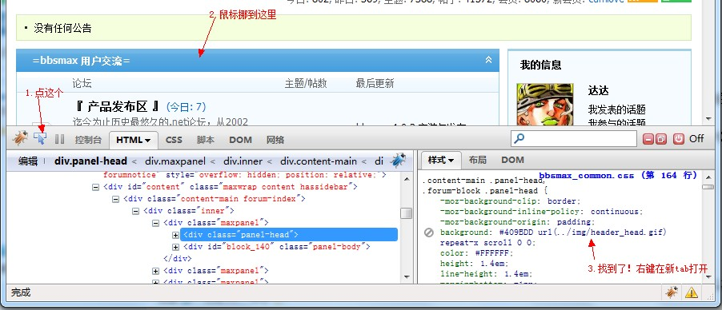
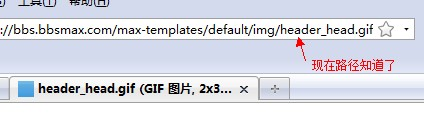

皮肤目录结构
bbsmax5中所有皮肤安装在bbsmax安装目录的max-templates文件夹下，又按不同皮肤分成不同子文件夹。
刚安装完bbsmax5后，会有一套默认皮肤，在default文件夹中，这个文件夹是特殊文件夹，不能随意修改文件夹名称。
另外安装的皮肤各自存放在max-templates的不同子文件夹中。
一个典型的bbsmax5皮肤必须包含一个skin.config文件和一个skin.png文件。
skin.config文件是皮肤的设置文件，包含了皮肤的名称、制作者、版本、介绍等信息。
skin.png文件是皮肤的预览文件，典型大小为200 x 116。
典型的skin.config文件的内容格式如下：
<?xml version="1.0" encoding="utf-8" ?>
<Skin>
<Name>我的风格</Name>
<Version>1.00</Version>
<PublishDate>2009-9-10</PublishDate>
<Author>老达</Author>
<WebSite>http://www.bbsmax.com/</WebSite>
<Description>大家好，我是一个漂亮的bbsmax皮肤</Description>
</Skin>
skin.config和skin.png文件必须在皮肤文件夹的根目录下，典型的bbsmax5的max-templates目录结构如下：
max-templates
|
|--default
| |--skin.config
| |--skin.png
|
|--skin1
| |--skin.config
| |--skin.png
|
|--skin2
| |--skin.config
| |--skin.png
主意我上面为了简单明了忽略了各个皮肤目录下的内容，实际上各个皮肤目录下可能会有模板、css、js、图片等文件。
bbsmax5的皮肤安装包为标准zip格式，可以直接在网站后台的皮肤管理页中导入导出皮肤包。
模板文件继承机制
bbsmax5和bbsmax 3.0的模板引擎有一个比较重要的区别。
5引擎总结了以往版本用户遇到的一个问题 -- 模板修改和程序升级的矛盾。并设计了一个机制来缓解这个问题（不能完全避免这种问题出现）。
所谓模板修改和程序升级的矛盾，就是用户出于某些目的修改了模板文件，但是每次升级模板又会被替换掉，导致很多用户不敢修改模板或者不敢升级程序的问题，很多同类程序也都存在同样问题。
对于这个问题我们把模板的修改需求归类为以下几种：
1、想调整bbsmax默认样式的图片和CSS
2、想制作一套皮肤，原有的bbsmax提供的html结构需要改变
3、想在页面上加入广告位置或别的什么
在新的模板引擎中对于第一种情况，在bbsmax5中是可以完全避免程序升级覆盖文件的问题的。而后两种情况则可以降低修改后程序不兼容的概率。
新引擎里是怎么做到上面说的这样的呢？
关键在于5的模板引擎加入了文件继承机制，模板引擎在当前皮肤目录下找不到所需的模板文件时，会自动到默认皮肤的文件夹下读取。
以第一种情况为例，我要制作一套自己的样式，没有修改到html结构，那么我就可以不提供任何模板文件，只要提供CSS、图片、脚本等内容就可以了，而所有的模板文件都靠模板引擎自己到默认皮肤下去找，这样就第一种情况就可以做到很好的兼容性了。
而第二和第三种情况，则可以利用文件继承机制，只在皮肤目录下提供自己修改过的模板文件，这样虽然存在升级后文件不兼容的可能，但是概率要比做一点修改就要提供完整模板文件的做法小一些，并且在出现问题时也很比较容易排查，不需要在茫茫模板海洋中寻找自己修改过的文件
:)
其实这个模板文件继承机制除了自动到默认皮肤目录下找缺失文件外，还可以有皮肤自己决定要到哪一个皮肤目录下找缺失文件，只要在Skin.config文件中加上
<SkinBase>继承的皮肤目录名称</SkinBase>配置节点就可以了，不过要确保所继承的皮肤已安装。
模板的文件继承机制就介绍到这里，下面我将通过制作一套简易皮肤来让大家熟悉bbsmax5的皮肤制作过程。
制作一个最简单的皮肤
现在我们将基于bbsmax5默认皮肤制作一个最简单的自定义皮肤，操作步骤如下：
1.解压或者从服务器复制一份max-templates/default目录，我这里假设你复制到本地电脑的D盘，那么default的路径现在是d:\default
2.新建一个文件夹叫myskin（由你自己定），这里我假设你建在D盘，那么myskin的路径应该是d:\myskin。
3.复制default文件夹下的客户端文件（CSS、脚本、图片等）到myskin文件夹下，完成后myskin文件夹的结果应该是这样的：
myskin
|--images
|--img
|--scripts
|--style
|--skin.config
|--skin.png
如果你发现你复制的文件夹多了，那就是你把模板文件也给复制了，我们今天要做的是最简单的皮肤，不需要改到任何模板文件，所以不需要复制模板文件。
如果你发现你复制的文件夹少了，那请一定要补上，因为bbsmax的模板引擎接管不到这些客户端文件，所以客户端文件是不能自动从default继承的。
4.弄张漂亮的图片替换掉bbsmax默认的分割栏背景，如果你一时找不到可以用我提供的（帖子最后提供）。
5.用FireFox的FireBug插件找到需要替换的背景图的位置。


通过FireBug，我们知道了标题栏背景图是两张以像素宽的图片，位置是img/header_head.gif
6.现在用我们准备好的漂亮图片，替换掉的d:\myskin\img\header_head.gif
7.修改skin.config文件，把信息改成自己的 :)
8.修改skin.png文件，如果你本地没有安装bbsmax那这步要稍微麻烦些，你需要先把myskin目录传到服务器上的max-templates文件夹下，然后选择myskin皮肤，
再抓图。如果你本地装了bbsmax，那就可以直接在本地操作了。
9.在MySkin文件夹上右击，压缩成zip文件（我假设你已经装了WinRAR）
10.到bbsmax论坛分享你的劳动成果 :D